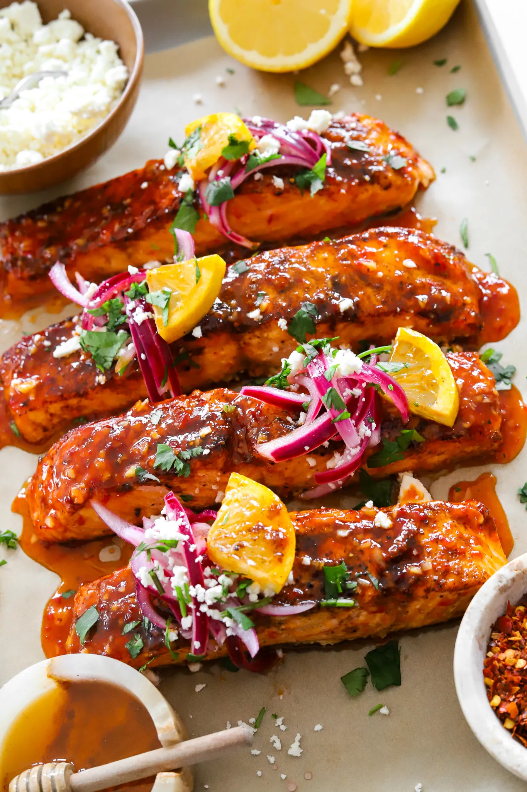

Honey Harissa Salmon
Introduction
The salmon is crispy yet moist and flakey and the flavor is not too spicy or not too sweet so perfect for everyone to enjoy a bite!
Jump to Recipe
Recipe Card

Ingredients
- 2 salmon fillets
- 1 tablespoon harissa paste
- 2 2 tablespoons honey
- 1 teaspoon olive oil
- Salt and pepper, to taste
Instructions
- Preheat your oven to 400°F (200°C).
- Mix the harissa paste, honey, olive oil, salt, and pepper in a bowl.
- Coat the salmon fillets with the mixture evenly.
- Place the salmon on a lined baking sheet and bake for 12-15 minutes or until cooked through.
- Serve warm and enjoy!
Tips & Notes
Tip:For extra crispy skin, sera the salmon in a hot pan for 2 miunutes before